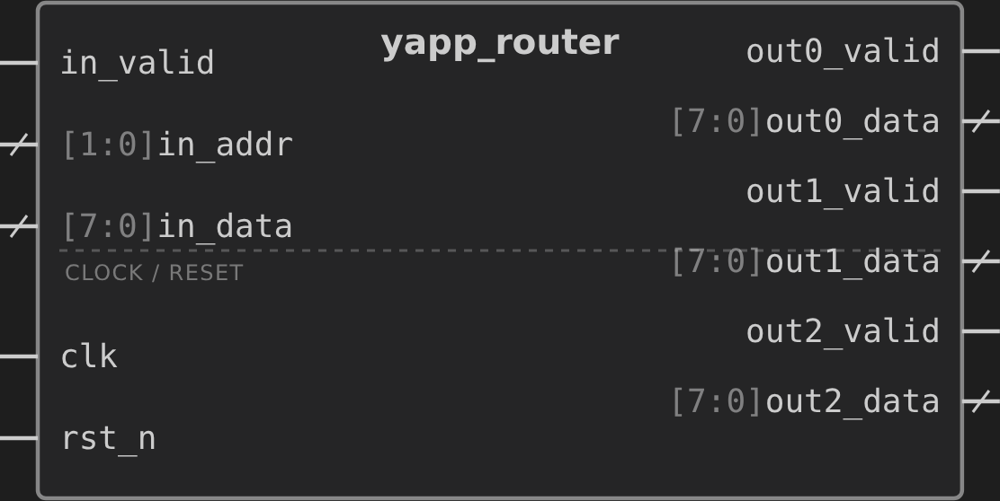
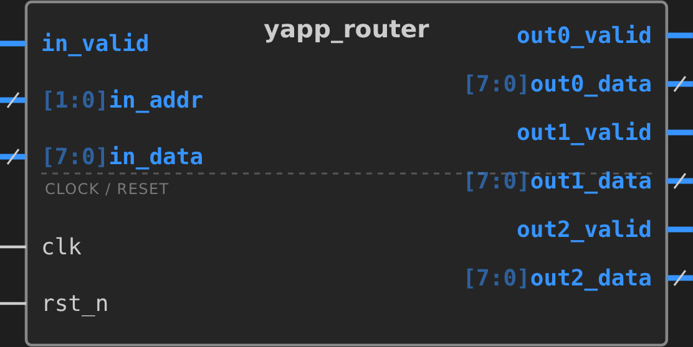
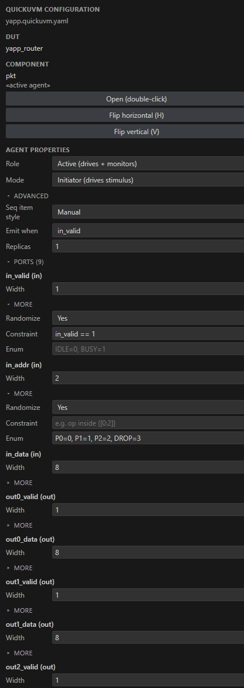
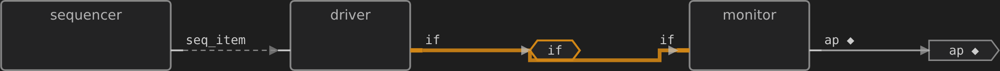
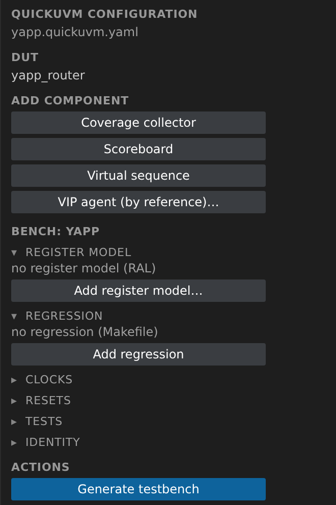
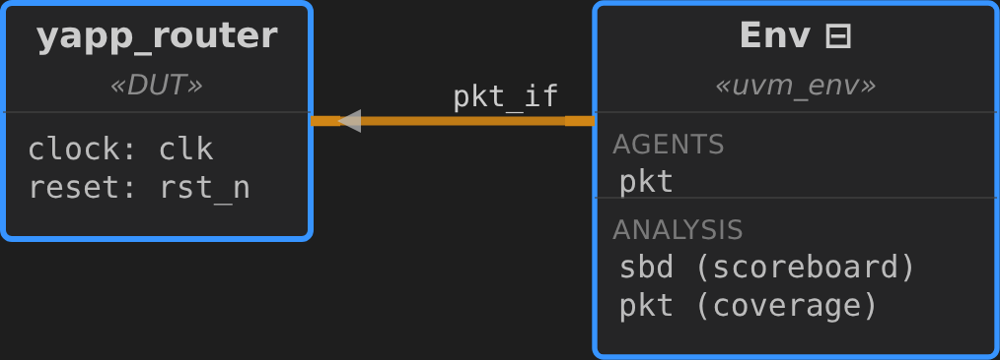
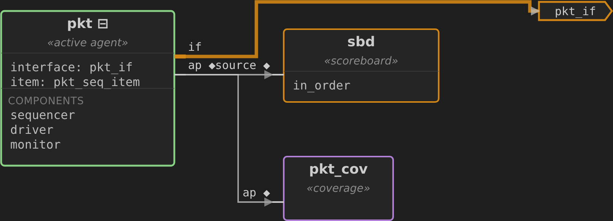

1 · Design
Set the DUT
From an RTL module to a running, self-checking UVM environment — laid out by pointing at ports in a diagram, generated in one click, closed with a single line of golden model.
The YAPP router is a one-input, three-output packet router: each valid packet carries a 2-bit destination address and an 8-bit payload, and one cycle later the router presents it on the addressed output channel. Address 3 means drop — no output. It's the classic verification teaching DUT, small enough to hold in your head and rich enough to need a real scoreboard.

The bench is a single agent that drives the input channel and observes all three outputs, plus a scoreboard that predicts which output each packet should reach, and a coverage collector on the destination address. You'll specify all of it by selecting ports on a diagram — never by writing UVM boilerplate.
You need three things: QuickUVM installed (pip install quick-uvm, the generator), the QuickUVM Architect VS Code extension (the diagram front-end), and a SystemVerilog simulator to run the result (Xcelium, Questa, or VCS). Create a folder with the router RTL below at rtl/yapp_router.sv and open it in VS Code.
Developing the extension from source? Press F5 and pick . Do not pick the yapp_buffer config — that is a different DUT for the other tutorial (a one-slot buffer with in_ready/out_ready and a single out_data, verified with two agents). If the symbol on your screen shows in_ready instead of out0_valid, you are on the wrong one.
// One input channel routes each valid packet to one of three outputs by its
// 2-bit address (0/1/2 = port, 3 = drop). One-cycle registered latency.
module yapp_router (
input logic clk,
input logic rst_n,
input logic in_valid,
input logic [1:0] in_addr,
input logic [7:0] in_data,
output logic out0_valid, output logic [7:0] out0_data,
output logic out1_valid, output logic [7:0] out1_data,
output logic out2_valid, output logic [7:0] out2_data
);
always_ff @(posedge clk or negedge rst_n) begin
if (!rst_n) begin
out0_valid <= 0; out1_valid <= 0; out2_valid <= 0;
out0_data <= 0; out1_data <= 0; out2_data <= 0;
end else begin
out0_valid <= in_valid && (in_addr == 2'd0);
out1_valid <= in_valid && (in_addr == 2'd1);
out2_valid <= in_valid && (in_addr == 2'd2);
out0_data <= in_data; out1_data <= in_data; out2_data <= in_data;
end
end
endmoduleA note on the pictures below: every schematic and panel is a live capture — the module’s symbol view, the verification schematics and the Properties panel are all rendered straight from the extension’s own webview, driven by this exact model and config. Only the design / verification tree views and the right-click menus are illustrations drawn here — they are native VS Code UI, not webviews — kept legible at any size and in either theme.
Open the QuickUVM Architect view from the activity bar. The extension parses every .sv in the workspace and shows the module tree under Design Hierarchy. Find yapp_router, right-click it, and choose .
Right-click yapp_router in Design Hierarchy → . This creates yapp_router.quickuvm.yaml — the extension names the config after the module — with the DUT, its clock (clk), and reset (rst_n) already filled in.
Setting the DUT is what turns a browsing session into a project: it's the anchor everything else hangs off. From here on, the extension edits one YAML config — the same file you could hand-write, kept surgically so your comments and hand edits survive every regeneration.
Right-click the DUT and pick (or use the toolbar). The router is drawn as a block with its inputs on the left and outputs on the right — this is the surface you'll select on to define the agent.
clk and rst_n are recognized as the clock and reset — they belong to the testbench harness, not to any agent, so you'll leave them out of the selection in the next step.
Rubber-band or Ctrl-click to select the data ports — the three inputs (in_valid, in_addr, in_data) and all six outputs — then, in the Properties panel, press . Name it pkt. The count in the button label is your check that all nine pins are selected and clk/rst_n are not.

Direction does the work: the extension routes the inputs to what the agent drives and the outputs to what it observes. One agent now owns the whole router interface.
A packet router invites a “one input agent + three output agents” instinct. Here a single agent that drives the input and samples all three outputs is the simpler, more robust choice: the scoreboard can then predict the entire output vector from one input packet in a single self-consistent transaction — no cross-agent ordering to reconcile. (Independent per-channel handshakes are where you'd reach for separate output agents.)
Select the pkt agent (in the diagram or the Verification tree) and the Properties view fills with its fields. Three edits turn a raw port list into a meaningful packet — note where each one lives, since two are per port and one is on the agent:
in_addr → , give it a symbolic enum: P0=0, P1=1, P2=2, DROP=3. The destinations then read by name and randomization self-constrains to the four legal values.in_valid → , set Constraint to in_valid == 1, so every generated item is a real packet.in_valid, so the monitor publishes only on cycles that actually carry a packet. The list offers only 1-bit ports of this agent — QuickUVM requires exactly that, because the generated gate is if (tr.in_valid).
Drilling into the pkt agent (double-click it, or ) shows the three components QuickUVM will generate — the sequencer feeds the driver a seq_item, the driver and monitor share the pkt_if interface, and the monitor publishes on its analysis port ap:

The enum is the testbench's own type, declared from the spec — not imported from the DUT. If the RTL ever encoded the addresses differently, the bench would catch it rather than mirror the mistake. That's the black-box default; white-box type sharing stays opt-in.
With nothing selected, the Properties panel shows the bench-level Add component palette. Add two things:
Scoreboard from pkt — a single-stream scoreboard sbd. Its source is pkt; there's no separate monitor agent because this one agent already sees inputs and outputs together.
Coverage for pkt — a collector with a coverpoint on in_addr. Being an enum field, it auto-bins one bin per destination, so closure means “we exercised P0, P1, P2 and DROP”.

A single-stream scoreboard predicts the outputs from the sampled inputs and compares them against what the DUT produced — the whole check lives in one transaction. You'll write that prediction in Step 7; it's the only code this bench needs.
The Verification Hierarchy now shows the whole testbench you've specified — DUT, environment, the pkt agent with its sequencer / driver / monitor, the sbd scoreboard and the coverage collector. Every element carries a badge telling you its generation state.
The amber U badges mean “declared, but no code behind it yet” — exactly the state before your first generate. After Step 7 they clear; edit the config afterward and they turn to a blue M (stale) until you regenerate. The badges are your at-a-glance map of what's real on disk.
The same testbench, drawn as a schematic — right-click yapp_router in Design Hierarchy → (or the button of the same name in Properties). At the top level it is the DUT wired to the Env through the pkt_if interface:

Double-click the Env to drop inside it: the pkt agent (green) fans out through its analysis port to the sbd scoreboard (orange) and the pkt_cov coverage collector (purple).

Hit (the ▷ on the Properties title bar, or the command palette). QuickUVM writes the full environment — 23 files — into tb/, the quickuvm.outputDir setting.
Point quickuvm.outputDir at your generated folder. It is not just a destination — the extension excludes it from the SystemVerilog source glob. The generated tree contains a DUT stub: a second module with your DUT's name, ports declared outputs-first. If the folder stays in the glob, the symbol shows the stub's interface instead of your RTL, and the generated UVM sources make the parse fail on uvm_pkg. (The copy shipped in QuickUVM/examples/yapp generates into gen/, so its workspace sets outputDir to gen.)
That's a complete UVM environment — driver, monitor, sequencer, agent, sequence, config, coverage, a two-part scoreboard, the env, a base test and a random test, the interface, the clock generator, the top and the filelists — with no base class to inherit and nothing to wire by hand. Every file is plain, readable UVM you own.
Everything generated is complete except one function: the golden model. QuickUVM cannot know your DUT's behavior, so it leaves predict() as a fail-closed stub that fatals until you fill it — a generated bench that measures nothing is the easiest way to fool yourself, so it refuses to pass empty.
Right-click the sbd scoreboard → , which opens the reference model at its prediction_logic seam. The router's whole behavior is six lines: a valid packet appears next cycle on out<addr>; the payload is latched on every channel and gated by out*_valid.
function pkt_seq_item yapp_router_predictor::predict(pkt_seq_item t);
pkt_seq_item extr = pkt_seq_item::type_id::create("extr");
extr.copy(t); // carry the sampled inputs through
// pragma quickuvm custom prediction_logic begin
// Route by the packet's destination address; DROP (3) produces no output.
extr.out0_valid = (t.in_addr == P0);
extr.out1_valid = (t.in_addr == P1);
extr.out2_valid = (t.in_addr == P2);
extr.out0_data = t.in_data;
extr.out1_data = t.in_data;
extr.out2_data = t.in_data;
// pragma quickuvm custom prediction_logic end
return extr;
endfunctionThat's the only code in the whole environment. The scoreboard compares this prediction against what the monitor sampled, on every packet — and because the model is written from the spec, a real routing bug in the RTL now shows up as a mismatch instead of hiding.
A passing scoreboard proves nothing until you've seen it fail. Flip one line — say out0_valid = (t.in_addr == P1) — regenerate the run, and confirm it reports errors. Then put it back. A check you've never watched fail is not yet a check.
Point your simulator at the generated filelist plus the RTL, and run the random test. On Cadence Xcelium:
$ xrun -f xrun.f +UVM_TESTNAME=rand_test UVM_INFO ... [pkt_seq] sending packet {in_addr: P2, in_data: 0x5a} UVM_INFO ... [PASS ] Expected out2_valid=1 out2_data=5a Actual out2_data=5a ... --- UVM Report Summary --- UVM_ERROR : 0 UVM_FATAL : 0 *** TEST PASSED - Vectors: 49 Ran / 49 Passed ***
Zero errors, forty-nine packets routed and checked. The same generated bench runs green on Xcelium, Questa and VCS unchanged — the generated code is vendor-portable, so your one filelist works across all three.
0 UVM_ERROR
0 UVM_ERROR
the golden model — nothing else
Every gesture above edited one small, readable config — this is the entire specification the diagram produced. You can keep working in the diagram or hand-edit this file; the two stay in sync.
project: {name: yapp_router}
dut: {name: yapp_router, reset: rst_n}
reset: {external: true}
clock: {period: 10, unit: ns}
agents:
- name: pkt
emit_when: in_valid # score only real packets
constraints: ["in_valid == 1"]
ports:
inputs:
- {name: in_valid, width: 1}
- {name: in_addr, width: 2, enum: {P0: 0, P1: 1, P2: 2, DROP: 3}}
- {name: in_data, width: 8}
outputs:
- {name: out0_valid, width: 1}
- {name: out0_data, width: 8}
# … out1_*, out2_* …
tests: [{name: rand_test, num_items: 50}]
analysis:
coverage: [{agent: pkt, coverpoints: [{field: in_addr}]}]
scoreboards: [{name: sbd, source: pkt}]Add a coverpoint on in_data corners and a cross in_addr × in_data to ask “did every port see the boundary payloads?”
Add a directed sequence that blasts one address, or a virtual sequence that interleaves patterned packets — all from the diagram's add palette.
Add a regress: block and QuickUVM emits a Makefile that runs the test across seeds and merges coverage.
Add a sim: block to emit run scripts for Xcelium, VCS and Questa plus an LSP-clean compile.f — one core, thin per-vendor wrappers.
The loop that matters: diagram → config → generate → one seam of golden model → green. You never inherited a base class, never wired a TLM port, never hand-wrote a driver. The picture is the specification — and the specification is what you can read, diff, and hand a teammate.